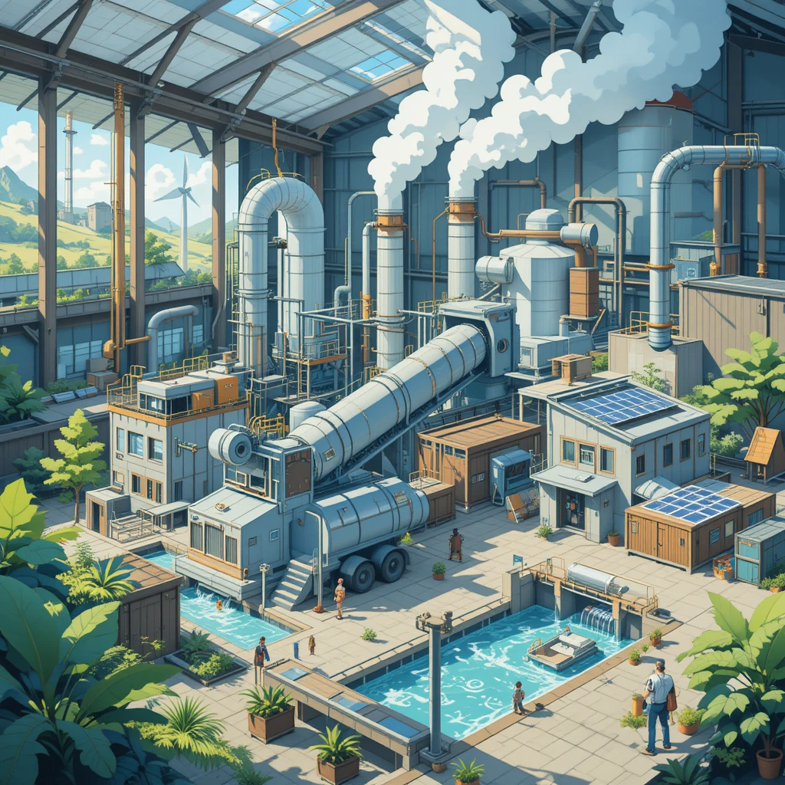

5.2. Uso eficiente de recursos y energías renovables en nuestro sector productivo
El uso eficiente de recursos y la integración de energías renovables son clave para la sostenibilidad en la producción. Algunas estrategias destacadas incluyen:

- Minimización del impacto ambiental: Se optimizan los procesos productivos para reducir el desperdicio y mejorar la eficiencia.
- Implementación de energías renovables: La energía solar, eólica e hidroeléctrica se están incorporando en diversas industrias.
- Eficiencia energética: Se aplican tecnologías avanzadas para reducir el consumo de energía sin afectar la calidad de producción.
- Gestión responsable de residuos: Se promueve la reutilización y el reciclaje dentro de los procesos productivos.